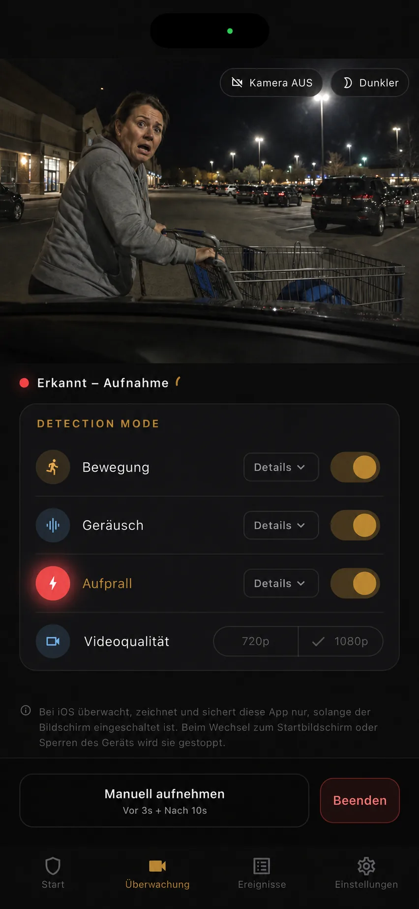

Handy für wechselnde Winkel
Versetze die Kamera an Seiten-, Front- oder Heckscheibe, wenn sich das Risiko von Stellplatz zu Stellplatz ändert.
Das Werkzeug passend zum Parkalltag wählen
Eine Handy-App und eine Dashcam können am geparkten Auto aufnehmen, lösen die Aufgabe aber unterschiedlich. Das Zweithandy eignet sich für geplante, bewegliche und kurze Einsätze mit vorhandener Hardware. Ein festes Kamerasystem unterstützt eher einen integrierten Ablauf. Entscheidend sind Häufigkeit, Dauer und die Zahl der benötigten Blickrichtungen.
Aktualisiert:

Versetze die Kamera an Seiten-, Front- oder Heckscheibe, wenn sich das Risiko von Stellplatz zu Stellplatz ändert.
Soll die Kamera im Fahrzeug bleiben und regelmäßig starten, vergleiche dafür entwickelte feste Systeme.
Kamerazahl, Strom, Hitze, Display, Berechtigungen, Speicher, Sichtbarkeit und Einrichtungszeit sind wichtiger als das Wort Parkmodus.
Es passt, wenn du den Einsatz bewusst vorbereiten kannst: ein Restaurantbesuch mit engem Nachbarplatz, ein Einkauf am Wagenweg oder ein vorübergehender Ort, an dem eine bestimmte Scheibe wichtig ist. Du kannst das Gerät neu ausrichten, Bewegung, Geräusch oder Erschütterung wählen und für gelegentlichen Bedarf auf eine dauerhafte Installation verzichten.
BlackShisa zeichnet Ereignisse mit drei Sekunden Vorlauf und wahlweise 10, 30 oder 60 Sekunden Nachlauf auf. Dateien werden zuerst lokal gespeichert, Google Drive bleibt optional. Dieser Ablauf passt, wenn du zurückkehrst, einzelne Ereignisse prüfst und das Handy verwaltest. Er entspricht nicht einer stets montierten, ins Fahrzeug integrierten Kamera.
Soll die Kamera täglich beim Fahren und Parken installiert bleiben, vergleiche Dashcams, die für diesen Ablauf gedacht sind. Je nach Modell und Einbau können fahrzeugspezifische Halterungen, mehrere Kamerakanäle, Fahrbetrieb oder eine für Festeinbau vorgesehene Stromlösung verfügbar sein. Funktionen und sichere Montage unterscheiden sich; vergleiche konkrete Geräte statt nur Kategorien.
Ein Zweithandy liefert eine Kamerarichtung und muss befestigt, versorgt, kontrolliert und teilweise entfernt werden. Auf dem iPhone bleibt die App bei eingeschaltetem Display im Vordergrund. Android nutzt einen berechtigungs- und energiesparabhängigen Vordergrunddienst. Diese Bedienung ist weniger geeignet, wenn du ein unbeaufsichtigtes System ohne wiederholte Vorbereitung erwartest.
Ein vorhandenes Telefon kann den Kamerakauf für einzelne Einsätze vermeiden, besitzt aber weiterhin Wert und ist eventuell durch die Scheibe sichtbar. Berücksichtige Diebstahl, Innenraumhitze, Akkuzustand, Ladeausrüstung, Speicherpflege, Display, Halterung und die Zeit für jede Prüfung. Ein niedriger Einstiegspreis hebt die Verantwortung im Betrieb nicht auf.
Auch ein festes System verlangt Entscheidungen zu Montage, Stromquelle, Fahrzeugbatterie, Speichermedium, Abdeckung und eventuell professioneller Hilfe bei Kabeln oder Verkleidung. Keine Variante garantiert Ereignis, Gesicht, Kennzeichen oder Kontaktstelle. Kamerawinkel, Licht, Entfernung, Hindernisse und Auslösung bleiben ausschlaggebend.
Wähle das Zweithandy bei gelegentlicher, relativ kurzer Überwachung eines bekannten Risikobereichs, wenn du jeden Einsatz einrichten und prüfen willst. Ziehe Spezialhardware in Betracht, wenn du häufig überwachst, feste Front-, Heck- oder Mehrfachansichten brauchst oder die Vorbereitung des Handys dazu führen würde, dass du es nicht verwendest.
Das Handy kann auch ein Test vor dem Hardwarekauf sein: Finde heraus, welche Richtung zählt, wann Bewegung, Geräusch oder Erschütterung brauchbare Ereignisse liefern und wie oft du tatsächlich prüfst. Bleibe bei deiner konkreten Situation. Aufnahme- und Einbauregeln variieren; dies ist weder elektrische Einbauanleitung noch Rechtsberatung.
FAQ
Klare Antworten, einschließlich der Grenzen, die du vor dem Einsatz eines alten Smartphones kennen solltest.
Nicht in jedem Fall. Es passt zu geplanten kurzen Einsätzen mit einer Ansicht. Fester Alltagseinsatz, mehrere Kameras oder integrierter Fahrzeugstrom können für Spezialhardware sprechen.
Es verwendet vorhandene Hardware, doch Handywert, Halterung, geeignete Stromversorgung, Speicherpflege, Einrichtungszeit sowie Hitze- und Diebstahlrisiko gehören in den Vergleich.
Ja, bei sicherem Betrieb. Eine feste Kamera kann die übliche Richtung abdecken und das Zweithandy vorübergehend auf eine sonst ungesehene Seite zielen.
Nutze das Zweithandy für gezielte Einsätze mit manueller Vorbereitung und vergleiche Spezialhardware bei fester, häufiger oder mehrwinkeliger Abdeckung.